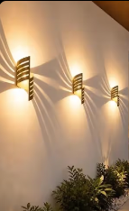

DIY · WOHNEN & LICHT
Eine Wandlampe aus Kunststoffrohren
Waagerechte Querstreifen prägen die Leuchte; das Licht fällt passend dazu in horizontalen Streifen. Dieses Referenzbild ist das verbindliche Endprodukt für die Projektseite.
Zur Schritt-für-Schritt-Anleitung ↓
Schritt für Schritt direkt aus dem Video
Die Bildfolge und kurzen Beschreibungen sollen direkt aus dem TikTok-Video stammen. Die Schritte und Prozessbilder müssen die Herstellung genau dieser Lampe zeigen. Dafür verwende ich ausschließlich Originalaufnahmen aus dem Video, sobald sie verfügbar sind.
Zum Originalvideo →